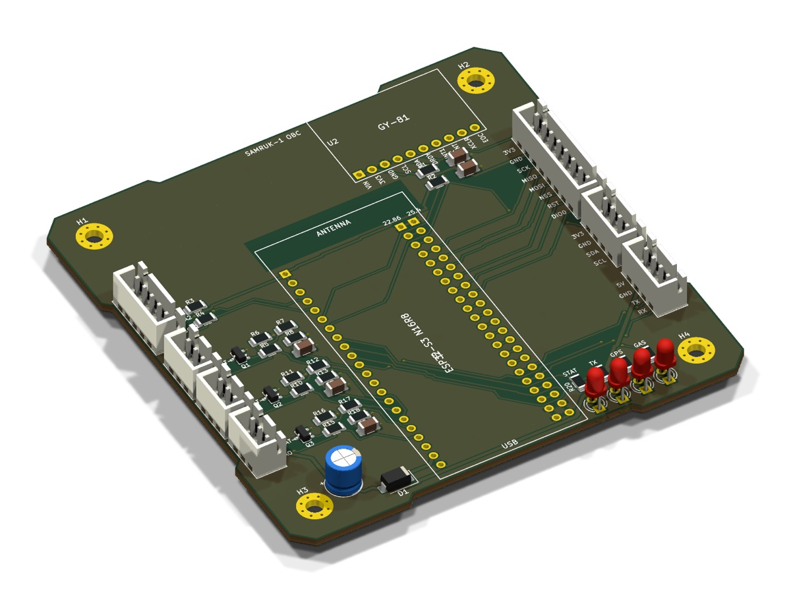
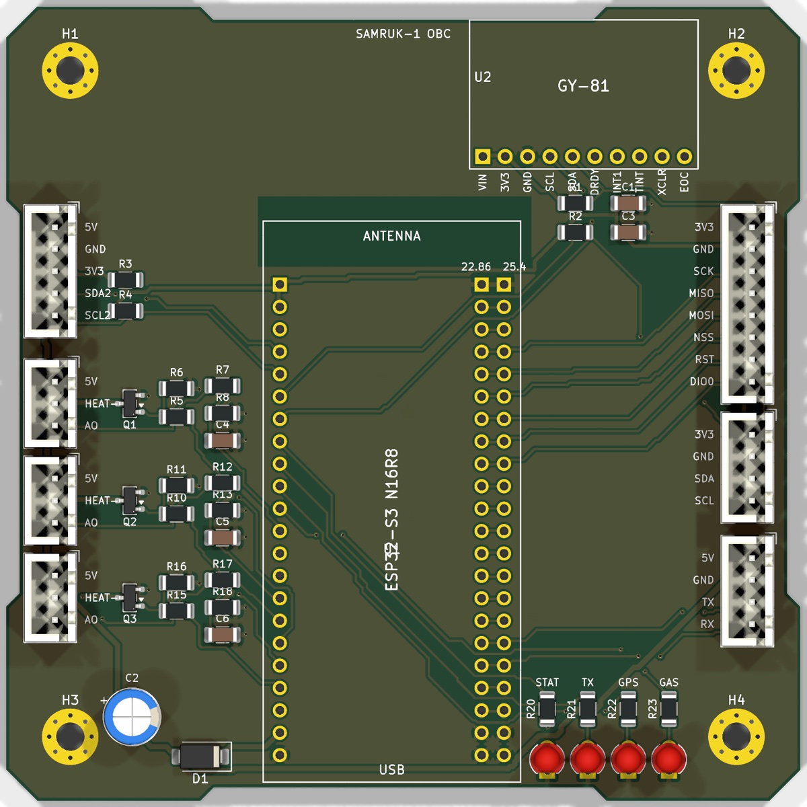
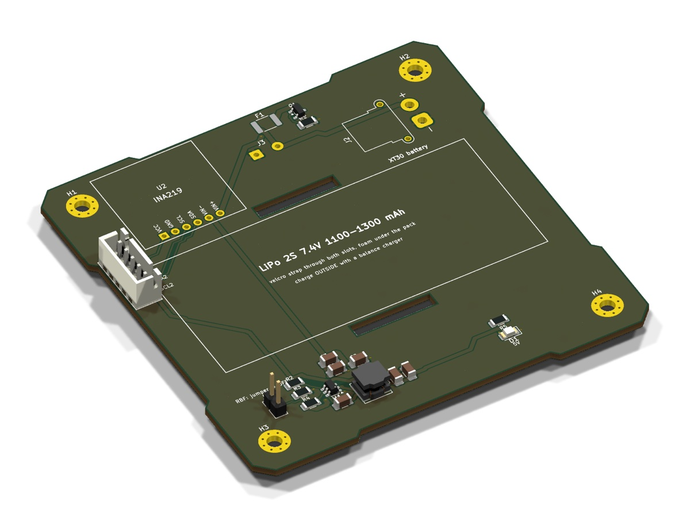
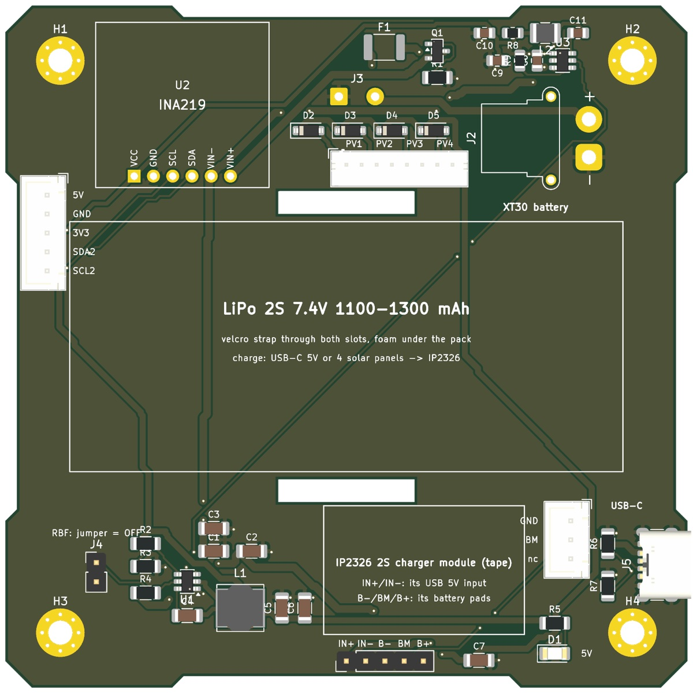
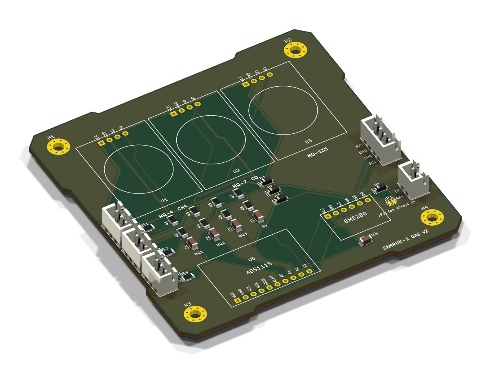
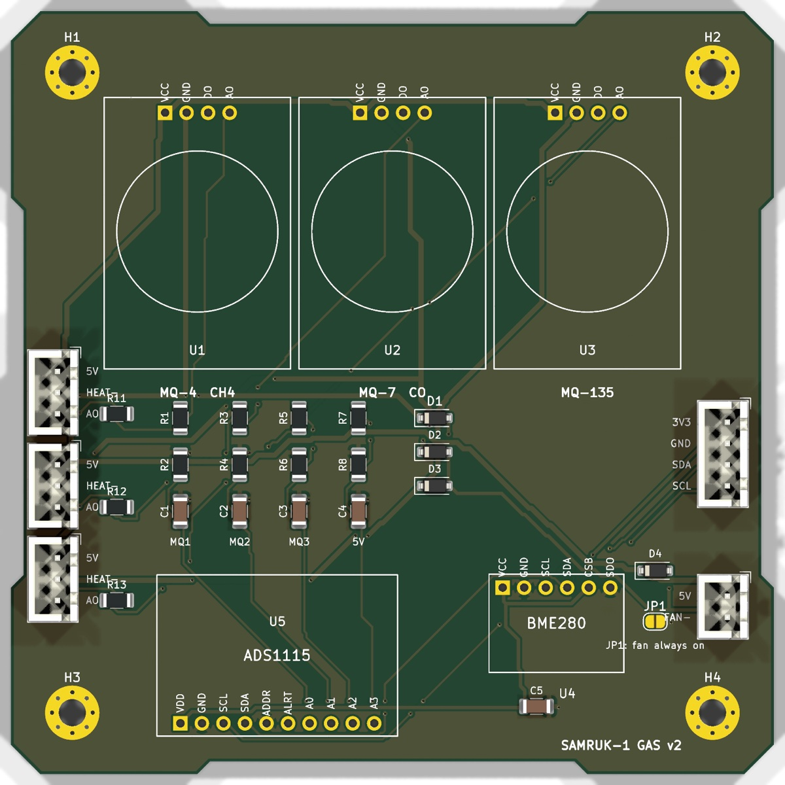
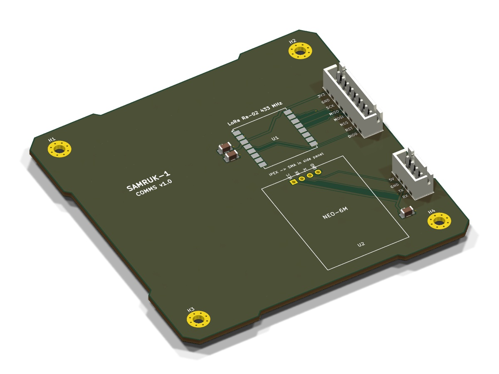
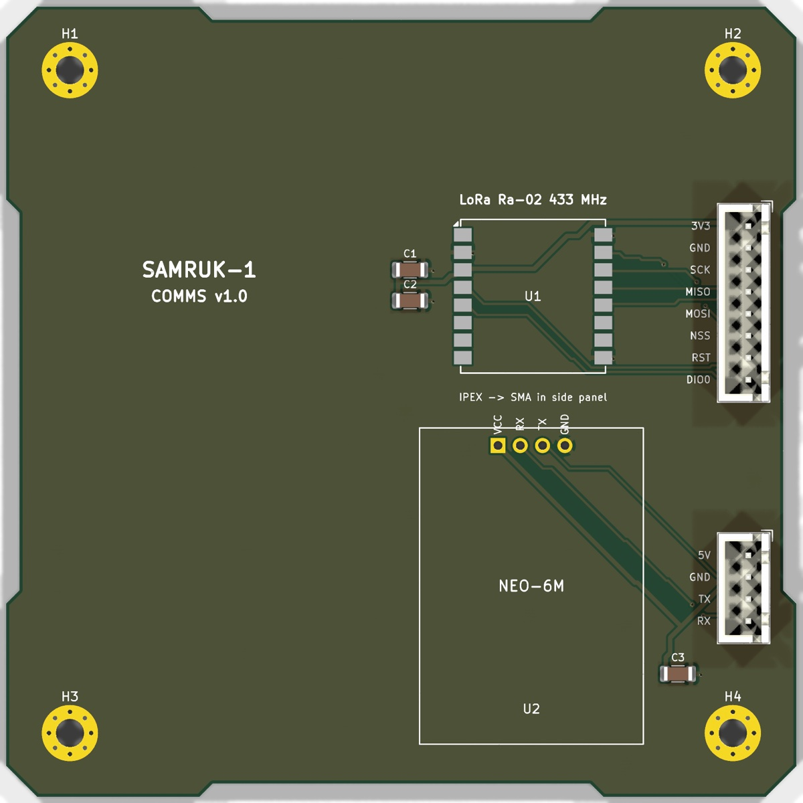

OBC — the main computer
ESP32-S3 module, motion sensors and the connectors that tie the stack together.
- ESP32-S3
- IMU
- stack bus
Samruk-1 is a small atmospheric probe. Its four boards were designed in KiCad with an AI agent in the loop — and every one of them went through the slow loop of order, wait, solder, measure.


ESP32-S3 module, motion sensors and the connectors that tie the stack together.


2S lithium pack, protection, current monitor and TPS563201 buck converters — the circuit Proofboard starts with.


Three MQ gas sensors with a precision ADC for methane and air-quality readings.


LoRa telemetry and GPS for tracking the probe.
Renders of the first (SMD) revision. Switch between the 3D view and the top-down layout.

Proofboard's first exam is the power circuit from the EPS board, shrunk to a 22 × 22 mm module: a TPS563201 buck converter from a 2S battery to 3.3 V at up to 1 A. Every model designs the same module; only the decisions differ.
The first fabrication run puts sixteen isolated modules on a single 100 × 100 mm board. Four are identical references to measure the bench's own noise; six carry one known defect each; six are designed by AI models.
If the bench can't tell the defective boards from the references, that's the answer — and it will be published.
Planned layout, illustrative.